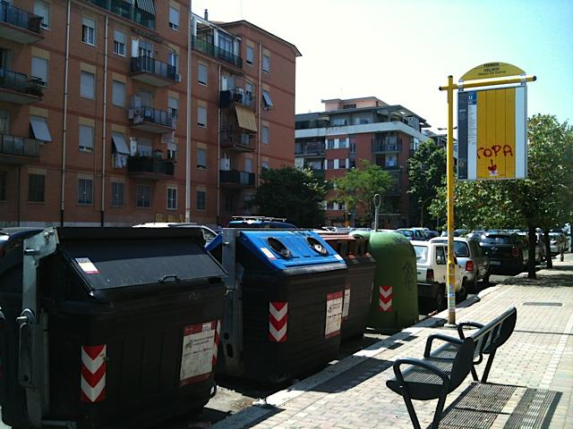

Every day we navigate a space designed by others. Or, to be more precise, a series of spaces designed in specific ways to address specific situations: the path we take from our door to our destinations will follow a specifically designed path: roads, sidewalks, car parks, bus stops, benches. Everything. Everything we encounter impacts our life. Everything is an interface. In an ideal city, where designers, UX experts and architects are working together (and possibly with artists and philosophers too) the final result is an environment where we are assisted in adopting effortlessly the most natural and logical solution to every situation.
Let’s imagine the following scenario, in example:
When designing a bus stop in sunny Rome, it makes perfect sense to have a bench available nearby; similarly, it makes sense to have the waste bins not too far from it.
One can easily imagine a person leaving home with their trash on their way to work. So, the ideally designed space is a bus stop, with a bench, with waste bins nearby. Now take these ingredients and apply them in the Roman creative own way: you place the bins IN the bus stop; you place the bench right IN FRONT of the waste bins.
Bus cannot stop on the side of the road, causing traffic jams. People waiting for the bus cannot use the bench without being exposed to the constant opening and closing of the bins, and they are in the way of people disposing of their trash, who are of course a nuisance for those who are there just waiting for the bus.
Additionally, the bus stop in Rome operates on demand: people waiting at the bus are supposed to show themselves to the bus driver and signal with their arm that they want the bus to stop. The waste bins make them almost invisible to the driver and make accessing the bus a dangerous (and often stinky) adventure.
This problem of conflicts of affordances has been the theme of a recurrent exercise in the Wayfinding class: The exercise has been nicknamed “The impossible Pictograms”; in the context of watch-and-intervention practice, students are asked to look for situations on campus in need of a design solution. From a denied desire path to a confusing directional sign, students choose their issue and create an ad-hoc pictogram. The only constrain that they receive is that, while the design execution of the pictograms must be impeccable, the proposed solution has to be impossible.
The brief starts with these two photos taken in a metro station in Paris. The map is well designed and useful. So is the trash bin. They both needs to be there on the platform, but the bin should better not be placed in front of the map. The poor placement generates an equally poor user experience: the user who might just need to dispose of trash and the one looking for information on the map create a nuisance to each other. A totally design dependent conflict.
Similar problems arise when a bench is positioned in front of a map. The traveller resting on the bench conflicts with the one trying to read the map disturb each other.
After having shown these photos, the ‘impossible pictograms’ describing the issues are unveiled: users are reminded to train their basketball skill in order to dispose of garbage properly; they are alerted about pickpockets and they are given suggestions on how to react in case of too close contact with each other.
Thus conceived, the exercise is meant as a strong conversational piece, with a creative component that puts it halfway between performative art and visual design and it has unsurprisingly became a favorite among students.
Here is a gallery of some of the most talked-after pictograms conceived on campus.